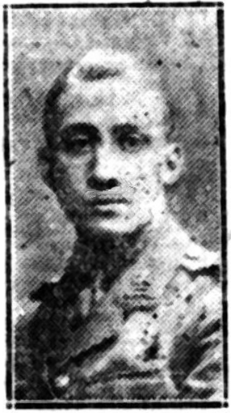
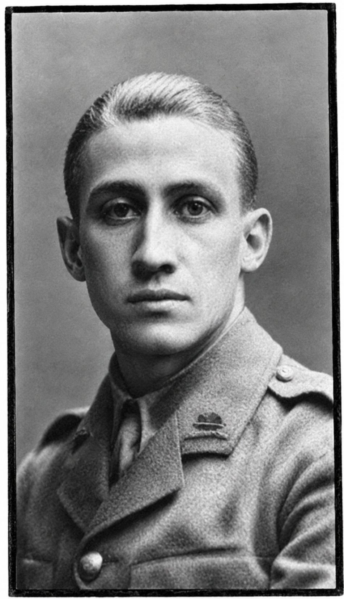

Geoffrey Herbert Tigar


Harold and Geoffrey Tigar - The Tigar brothers, Harold Walter and Geoffrey Herbert, were both educated at John Lyon School in Harrow and served during the First World War. Their military careers took different paths, with Harold killed in 1915 at Aubers Ridge and Geoffrey killed two years later during the fighting at Passchendaele.
Civilian Life - Geoffrey Herbert Tigar was born in Haverstock Hill in July 1896 and was the son of Walter and Mary Agnes Tigar of Nibthwaite Road, Harrow. He was educated at St. Chrétienne's School, Wealdstone, and the Lower School of John Lyon, where he passed the Junior Oxford Examination. He was also known for playing football. Before the war he worked in an accountant's office in the City.
Military Life - Soon after the outbreak of war, Geoffrey left his position and joined the Artists Rifles in March 1915, going to France in August that year. He subsequently received a commission in the 6th Battalion, Royal Berkshire Regiment, in August 1916, becoming a Second Lieutenant.
On October 12, the Allied forces launched the First Battle of Passchendaele. The assault took place in torrential rain, turning the battlefield near Poelcappelle into a deep swamp of liquid mud and shell craters. Over October 12–13, the 6th Battalion, Royal Berkshire Regiment was tasked with holding newly won, precarious positions and enduring intense, retaliatory German artillery bombardments and machine-gun fire. 2nd Lt. Tigar was killed on 13 October near Poelcappelle during these fierce tactical exchanges. He was only 21 years old. Because his body was never recovered or identified from the chaotic battlefield, he has no known grave. He is commemorated on the Panel 105 to 106 of the Tyne Cot Memorial in Belgium.
Three brothers lost during the war years Research also records a third Tigar brother, Laurence Edward, who died in the final quarter of 1915. However, he is not recorded by the Commonwealth War Graves Commission or Imperial War Museums. It is likely that he was not in the armed services when he died. Sadly not without precedent, even within the context of bereaved families of John Lyon pupils, the First World War brought the deaths of three sons, Harold and Geoffrey in military service and a third son, Laurence. Two further sons survived the war, a younger brother Wilfred died in 1966 age 65 and an older brother Frederick didn't die until 1954.